Micro-Degree Artificial Intelligence and Society
– Technical Aspects of AI –
Lecture 2.1: Neural Networks


Supervised Learning Algorithms
- A machine learning algorithm for classification:
- Takes the attributes xi of an unknown observation as input
- Predicts the class yi of the observation (output).
- Learns from training data to improve its performance.
- Last lecture: various algorithms for classification:
- Naive Bayes
- k-Nearest Neighbors
- Decision Trees
- Now: neural networks as a powerful and flexible architecture for machine learning algorithms.
Neural Networks
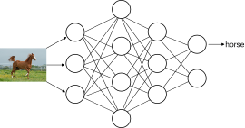
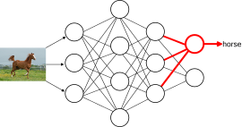
Inspired by: YouTube Science Buddies Super Simple Neural Network Explanation.
The Perceptron
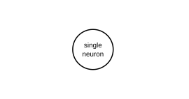
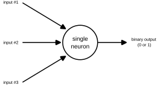
Inspired by: YouTube Science Buddies Super Simple Neural Network Explanation.
Should I Go Out Tonight?
- Inputs:
- Is it not raining outside?
- Are my friends going out?
- Do I have money left?
- Output: Go out? (yes or no)
- Simple algorithm: If two or more inputs are "yes", I'm going out.
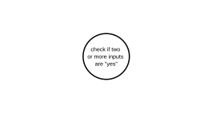
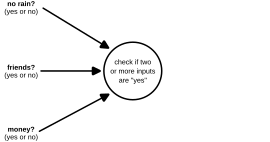
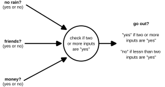
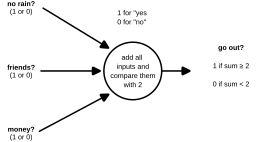
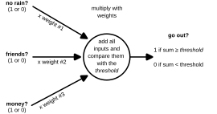
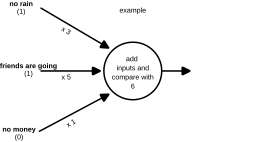
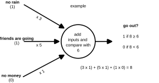
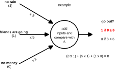
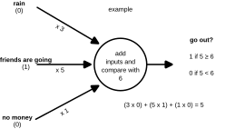
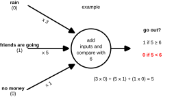
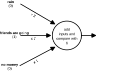
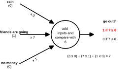
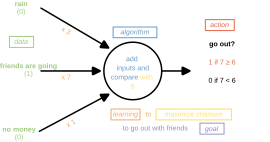
Inspired by: YouTube Science Buddies Super Simple Neural Network Explanation.
Neural Network for Image Recognition
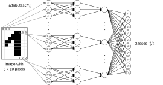
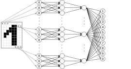
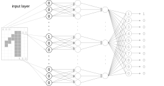
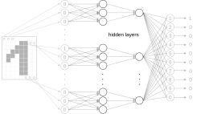
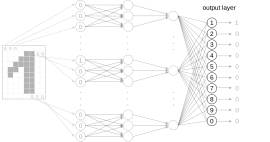
Summary
- Neural networks consist of individual neurons (perceptrons).
- Individual neurons receive inputs and calculate an output using an activation function.
- Outputs are passed to neurons in the next layer of the neural network until the output layer is reached.
- The input layer receives the attributes of an observation xi as input. The output layer outputs one of the possible classes yi.
- The importance of inputs can be modified via weights.
- During the training of neural networks, the weights are adjusted until the output is optimal.